OCR方向论文解读
基于回归的文字检测：优点->对规则形状文字检测效果较好；缺点->无法准确检测不规则形状文本。
CTPN(16/09)¶
论文|代码|RNN, Seq2Seq, Attention解析|LSTM解析
网络结构
CTPN**只检测横向排列**的文字，类似Faster R-CNN，但加入了LSTM
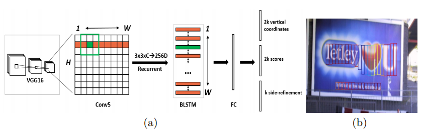
Conv5每点要结合周围3x3区域特征获得一个长度是3x3xC的特征向量，输出N*9C*H*W
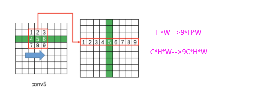
N*9C*H*W-->reshape-->(NH)*W*9C-->以Batch=NH且最大时间长度T_max=W的数据流输入到双向LSTM，学习每一行的序列特征，双向LSTM输出(NH)*W*256-->reshape-->N*256*H*W-
最后的输出特征，特征既包含**空间特征**(
CNN学习)，也包含**序列特征(lstm学习)**，因为文字是连续的？ -
特征图:
N*256*H*W→fc→N*512*H*W→类RPN→text proposal(建议框)
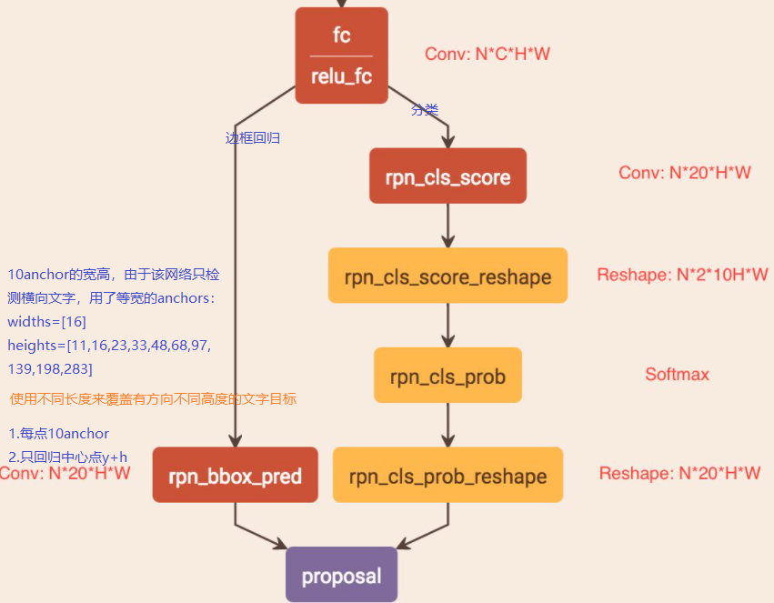
边界框回归方式
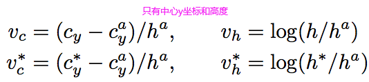
结果处理:使用文本线构造算法来生成真正的检测框。
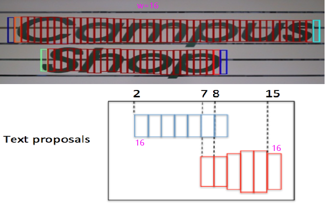
R2CNN(17/06)¶
- 不直接回归框的旋转角度(
-90~90相同矩形相似,0~180相似)，斜框回归用(x1,y1,x2,y2,h)表示：顺时针方向两个相邻点坐标和高来定义一个倾斜矩形框，回归这五个值就容易回归了。
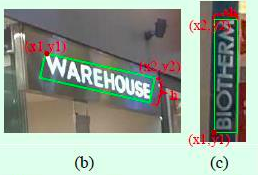
主要是为了解决旋转文本的检测，主要是在Faster RCNN的算法基础上做了一些修改
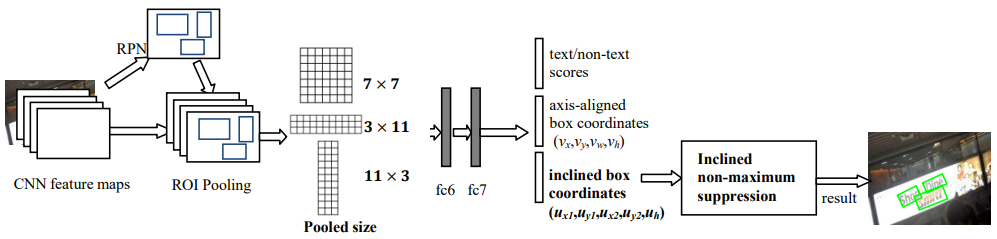
-
通过
RPN网络，得到正框的Proposal。由于很多文字是很小的，因此将Faster RCNN中的anchor scale(8,16,32)改为(4,8,16,32)。实验证明增加了小的尺度后检测效果明显提升。 -
ROI Pooling时的尺寸除了7*7外，还有两种长宽不一致的尺寸：3*11和11*3，这种设置的用意也非常明显，就是为了解决水平和竖直长文本的检测。然后对于提取到的ROI特征做cancat操作进行融合作为后续预测支路的输入。 -
预测输出有3个支路
-
第一个支路是**有无文本的二分类**，这个和目标检测算法中的目标分类类似。
-
第二个支路是**水平框（axis-aligned box）的预测**，这个和目标检测算法中的框预测一样。
-
第三个支路时**倾斜框（inclined box）的预测**，这部分是这篇文章的亮点，而且该支路后面跟一个斜框NMS进行处理得到最后结果。虽然倾斜框支路也能预测水平框，但是作者认为第二个支路的存在对最后结果帮助较大。
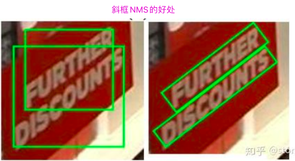
-
采用倾斜框的NMS算法处理(a)中的预测框后得到的结果，可以看到结果比较好，基于倾斜框的NMS算法和传统的基于水平矩形框的NMS算法差别不大，只不过计算对象换成两个倾斜框
-
损失函数(3部分)
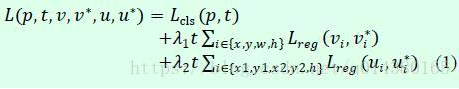
- 有无文本的二分类损失Lcls
- 水平框的回归损失Lreg(vi,vi*)。
- 倾斜框的回归损失Lreg(ui,ui*)。
- 后面两部分都是采用目标检测中常用的smooth L1损失函数，所以损失函数方面没有太大的改动。
SegLink(17/03)¶
|code|
SSD改进- 直接回归旋转边框旋转角度难回归，(
-90~90相同矩形相似,0~180相似) - 不能检测很大的文本，这是因为
link主要是用于连接相邻的segments，而不能用于检测相距较远的文本行 - 不能检测形变或者曲线文本，这是因为
segments combining算法在合并的时候采用的是直线拟合．这里可以通过修改合并算法，来检测变形或曲线文本
检测过程
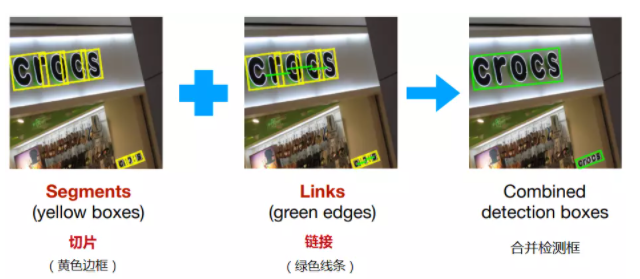
- 首先是检测生成一个一个的
segment（切片），如上图黄色框，这些segment（切片）是文本行（或单词）的一部分，可能是一个字符，或者是一个单词，或者是几个字符 - 通过link（链接）将属于同一个文本行（或者单词）的
segment（切片）连接起来，如上图绿色线条。link（链接）是在两个有重叠segment的中心点进行相连 - 通过合并算法，将这些
segment（切片）、link（链接）合并成一个完整的文本行，得出完整文本行的**检测框位置和旋转角度**。
模型结构
6个不同尺度的特征图上得到各自的segment和link，大feature检测小目标，小feature检测大目标
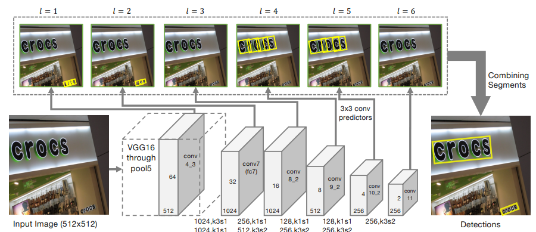
-
注意这里每个
feature map的每个位置**只采用了一个aspect ratio=1的default box**(每个位置只产生一个anchor)，而SSD中是一系列(1, 2, 3, ½, ⅓)；关于default box的scale size，本文:a_l = γ w_i/w_l , where γ = 1.5,输入图像宽w_i,当前feature宽w_l，ssd中是人为设置的。 -
segment检测(增加了角度回归)：每个特征图的
segment对应的输出通道是7:其中两个表示segment是否为文字的置信度值为(0,1)，剩下的五个为segment相对于对应位置的default box的五个偏移量[center_x,center_y,w,h,框的旋转角度θ]，预测offsets(偏移量):[Δx, Δy, Δw, Δh,Δθ]
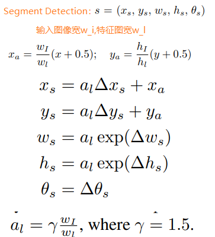
- link检测
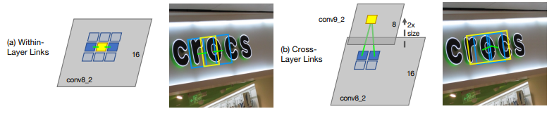
-
层内链接检测：表示同一特征层，每个位置只预测一个
segment所以只需要考虑当前segment与8邻域内的segment的连接状况，每个link有两个分数：正分、负分- 正分表示二者属于同一个文本（应该连接）
- 负分表示二者属于不同文本（应该断开连接）
- 所以，每个
segment的link应该是**2*8=16**维的向量
-
跨层链接检测:主要是为了解决同一文本的
segment在不同层被检测到，造成重复检测、冗余的问题；主要作用于连续两层输出特征图(
ocnv4_3不与其他特征层连续，不做cross-layer-links)，对于feature map的每个位置需要预测**2*4=8**,这里４表示的是与上一层的４个邻域，就是对应前一层的感受野 -
总结来说：对于conv4_3层，其link输出的维度为2x8=16；对于conv7, conv8_2, conv9_2, conv10_2, conv11其输出的link维度为2x8+2x4=24
-
特征图输出维度
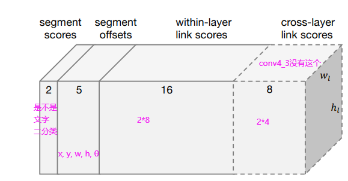
合并算法
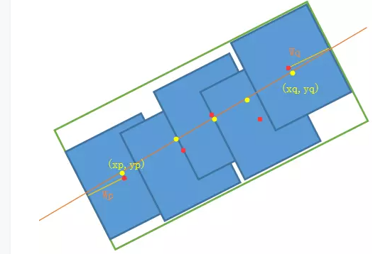
- 首先通过人工设定的
α 和β(这两个值是采用网格搜索找到最优，这里采用0.1step进行超参数穷举搜索)，对网络预测的segments和links进行滤除 - 将每个
segment看成node，link看成edge，建立图模型，再用DFS(深度优先搜索)找到连通分量，每个连通分量包含一系列segments(用B表示)，然后通过下面流程得到检测框和角度。

训练
-
如何生成
segments和links的ground truth，即default box的label，偏移(x, y, w, h, θ)，层内link及跨层link的label -
如何确定
default box为正样本还是负样本呢？图像只有一个文本行满足下面条件就是正样本，当有多个文本行时正样本还需与a_l/h最小的文本行匹配。default box的中心在当前文本行内；default box的size与文本行的高度比必须满足：max(a_l/h,h/a_l)<=1.5
-
如何确定正样本的
offset偏置？
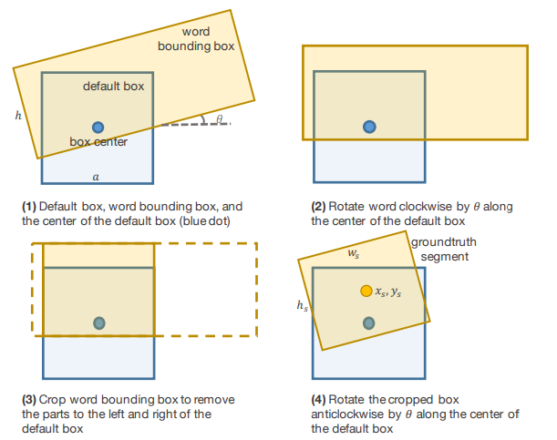
-
如何确定
within-layer link和cross-layer link的label是positive还是negative? -
两个
default boxes connect it - 两个
default box必须属于统一文本行
目标函数
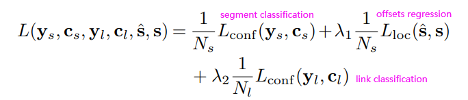
Textboxes(16/11)¶
TextBoxes只可以检测水平文本
-
多尺度输入(
300*300, 700*700, 300*700, 500*700, and 1600*1600)，以防止过长文本的框超过了默认框的最大比例，从而导致检测不到的情况。 -
论文中设计了**长宽比分别是1、2、3、5、7、10的default box**(即长条形的
default box，适应长文本)，但垂直方向的文本就检测不出来了。作者为解决水平方向框排列密集和垂直方向框排列稀疏问题，把水平方向的框**全部向下平移半个区域的单位**，这样就有12个anchor -
引入
text-box layers层，其实就是对特征图再用1x5的卷积核进行卷积操作，代替SSD的3x3卷积，这就产生了矩形感受野，更适合用于文字检测。
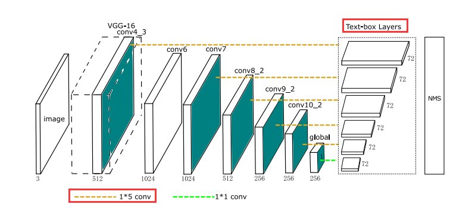
-
输出维度，每个位置
12anchors→12*(2+4)，2:文本/非文本，4:(x,y,w,h) -
损失函数:
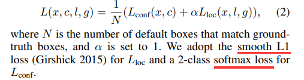
TextBoxes++(18/01)¶
TextBoxes++可以检测多角度的文本，主要讨论了文本框的两种表示方式，认为**四个坐标的表示**更优
- 顺时针的四个点坐标表示:
（x1,y1,x2,y2,x3,y3,x4,y4） R2CNN的框表示:顺时针相邻两个坐标点和高(x1,y1,x2,y2,h)
网络结构(没啥变化)
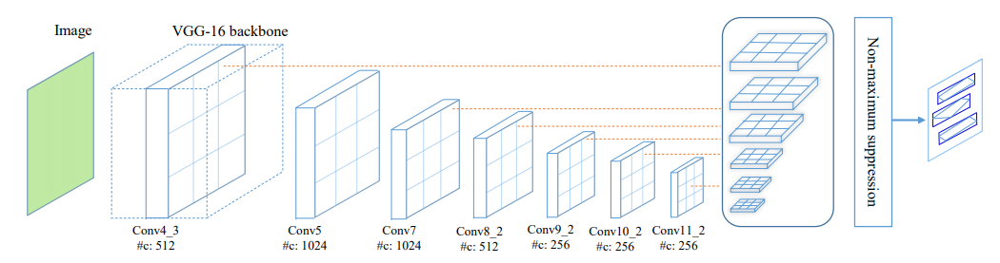
TextBoxes改进点
-
长宽比:
1、2、3、5、1/2、1/3、1/5，这样就兼顾了垂直文本的检测。 -
将
1*5的卷积核改为3*5用来生成text box layers：对宽文本也友好。 -
改进网络输出，用于适应于多角度文本。
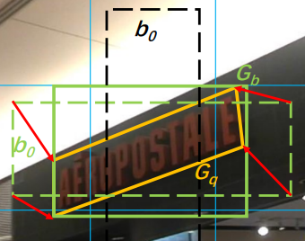
- 绿色虚线表示与
ground truth匹配的default box - 黄色框表示
ground truth - 红色箭头表示回归的方向
- 黑色框表示未匹配到真值的
default box， - 绿色实线框表示对应与
ground truth的外接矩形框。
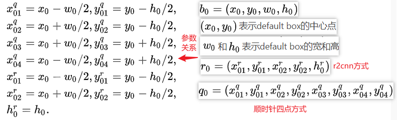
-
offset偏置输出- 四点的偏置输出
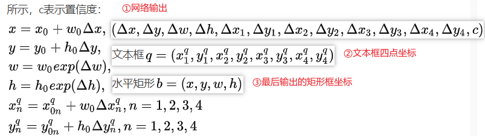
- 相邻两点+高的偏置输出
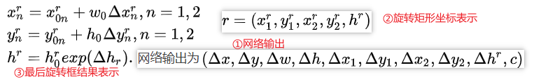
-
文本定位之后添加一个文字识别(用的CRNN网络)的过程，根据文本识别的效果，反馈给detection网络，帮助更好的detection。比如确定不是文字的部分，可以从结果中删除，用于辅助训练。
损失函数
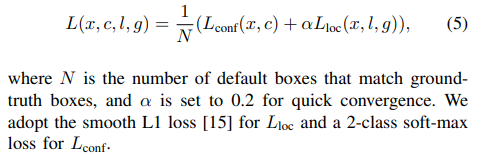
East(17/04 像素级的回归)¶
论文|tensorflow code|pytorch code
-
经过
backbone后抽取不同level的feature map(他们的尺寸分别是input_image的1/32,1/16,1/8,1/4)，这样ealy stage可用于预测小的文本行，late-stage可用于预测大的文本行． -
合并特征图并输出结果：
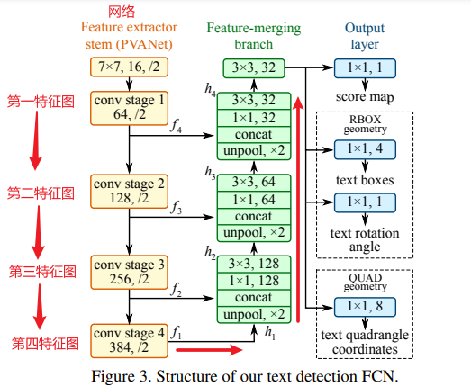
-
输出结果解释：
- 框的得分，论文中用
score map表示 angle几何图- 输出
RBOX(四通道几何图)：四个location图(四通道表示)(每个像素的top偏移，right偏移，bottom偏移，left偏移组成(d))
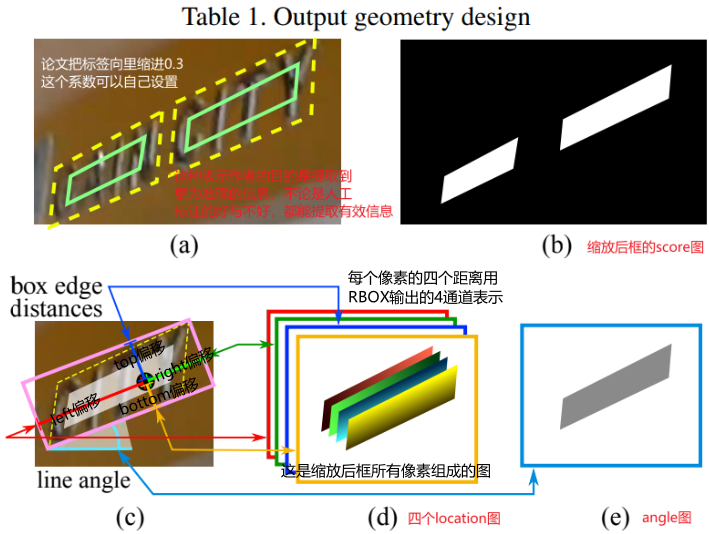
QUAD:8个通道分别表示从矩形的四个顶点到像素位置的坐标偏移，由于每个距离偏移量都包含两个数字（Δxi;Δyi）
- 框的得分，论文中用
Loss 函数
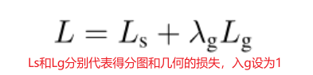
Ls(score map)的loss计算
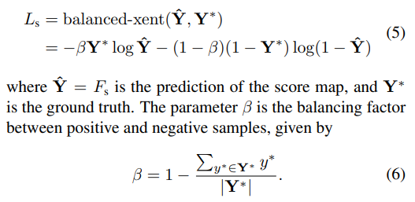
RBOX的几何图loss计算:包含四个locatioin图的损失(L_AABB)+angle图的损失L_θ
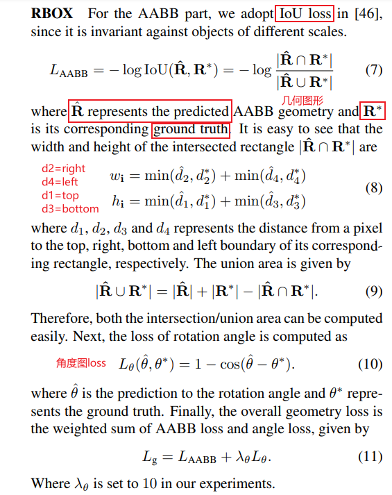
QUAD的loss计算:使用归一化的smooth l1 loss
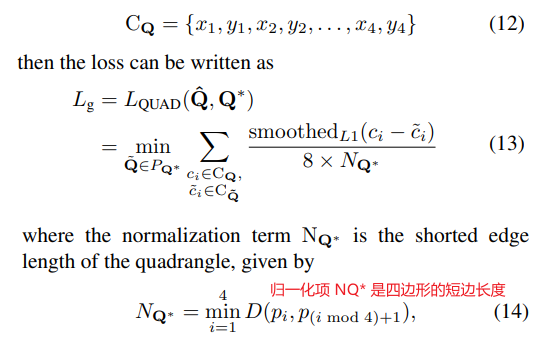
使用 locality NMS
-
遍历每个预测的框，然后按照交集大于某个
k就合并相邻的两个框。小问题:为什么要合并框？ -
每个像素都要预测四个距离(即一个框)，所以一个目标有几百上千个框都是重合的，所以要合并。
-
如何合并？通过两个给定四边形的分数进行加权平均。
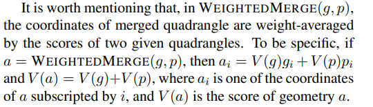
-
合并完后再按照正常
NMS消除不合理的框就行了。
缺点：EAST在长文本预测效果较差
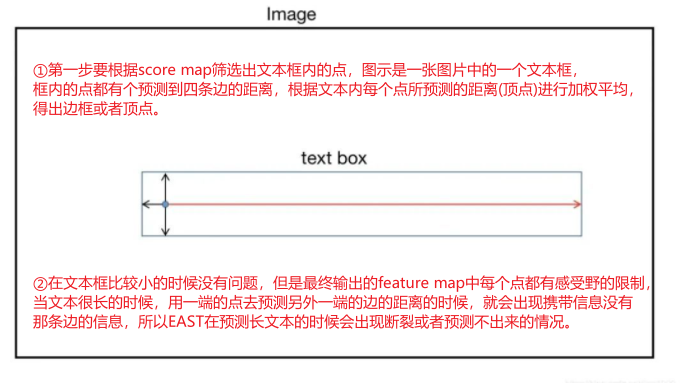
Advanced EAST¶
EAST算法的改进版，对EAST在**长文本检测地方的缺陷**进行了重大改进，使长文本预测更加准确。
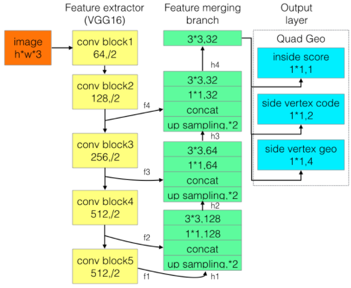
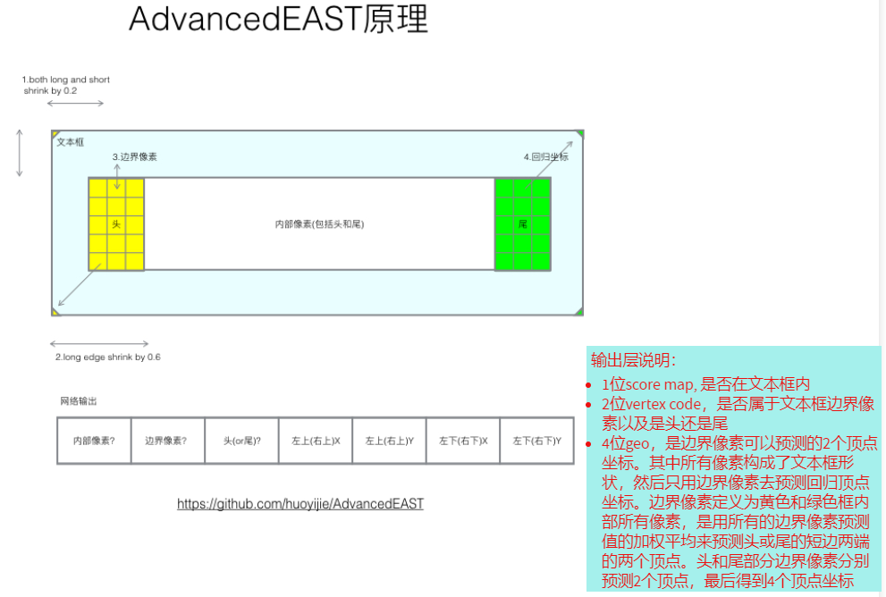
score map：和EAST一样，点在文本内的置信度；vertex code：第一通道表示是否是边界元素的置信度。第二通道表示是头/尾元素，0表示头部元素，1表示尾部元素；vertex geo：4通分别代表左上(右上)X、左上(右上)Y、左下(右下)X、左下(右下)Y，这里不是真正的X\Y坐标，而是根据当前点坐标的X/Y偏移量(主要是为了解决East感受野问题)；**AdvancedEast不再用所有的点进行预测顶点了，而是用头部元素预测左上、左下点，尾部元素预测右上右下点。**且根据预测出的头/尾元素进行加权平均得到4个顶点。
预测过程
网络输出一个feature map有7个通道(score map、vertex code、vertex geo)
-
筛选出
score map值高于threshole的点，得到activation point(激活元素) -
遍历上一步获得的所有
activation point，将在feature map中左右相邻(X坐标相差1，Y坐标相同)的activation point进行合并，得到若干region list
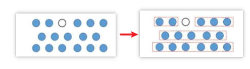
- 遍历上一步得到的
region list，将feature map中上下相邻的region list进行合并成为region group，具体上下相邻规则是如果region list1中所有元素向下平移一个单位后，和其他的region list有重合点，则进行合并，否则不进行合并。
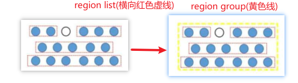
- 遍历每个
region group中的点，根据vertex code输出的值找到其中的头/尾元素，头/尾需要满足的规则是vertex code中第一通道输出的是否是边界元素置信度的值高于阈值，且vertex code中的分类置信度满足阈值(默认情况下阈值为0-0.1表示头部元素,0.9-1表示尾部元素)
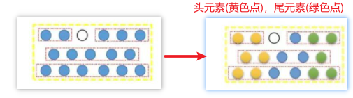
- 现在确定了每个
region group中的头尾元素，如下图所示，根据头部(尾部)元素所预测的左上(右上)X、左上(右上)Y、左下(右下)X、左下(右下)Y偏移量进行加权平均，确定最终预测的4个顶点。具体的加权平均的方式如下,n表示当前文本域内边界元素数量。
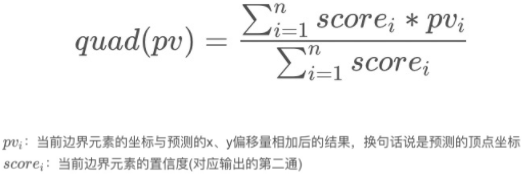
基于分割的文字检测：优点->对不同形状文本的检测效果都比较好；缺点->后处理耗时多，重叠文本效果差。
pixelLink(18/01)¶
标注规则
在文本实例内部像素标为 positive，其余的标为negative。
网络结构
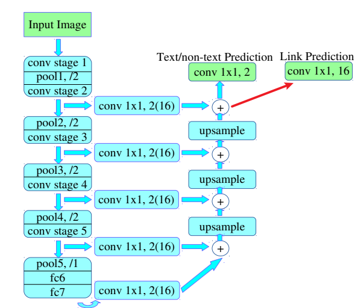
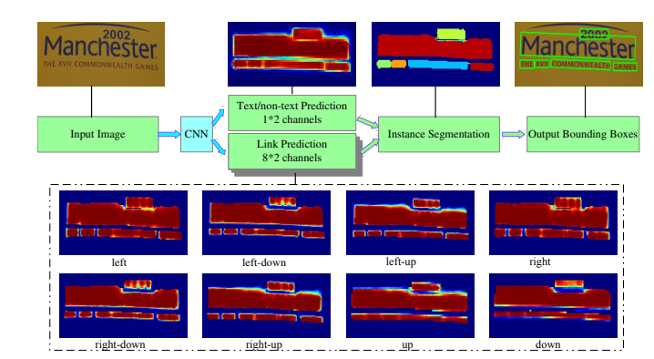
- 输出结果共有两部分:
text/no-test和link预测。受SegLink启发，每个像素点有8个邻居。给定一个像素点以及它的一个邻居点，如果它们同属于一个文本实例，则它们之间的link为positive。 - 最后得到
pixels和links，然后根据link positive将pixel positive进行连接，得到Cs(conected compoents)集合，集合中的每个元素代表的就是文本实例。两个pixel需要连接的前提条件：two link中至少有一个link positive．连接的规则采用的是Disjoint set data structure(并查集)的方法。 - 基于上述
CCs集合，直接掉调用opencv的minAreaRect提取带方向信息的矩形框。在此之后，还要根据在训练集上统计的信息，进行过滤，去掉噪声。
Loss函数
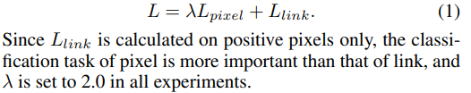
L_pixel分类损失更重要λ =2.0
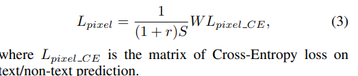
W表示预测的pixel分类的权值矩阵，r表示负正样本比例，论文中r=3，S表示每个文本实例的面积- 当文本实例的面积比较大，占的
loss损失就会被相对拉小，文本实例的面积比较小，占的loss损失就会被相对拉大。这样做的好处就是使得小的文本实例不会被大的文本实例的loss掩盖掉，也可以有loss回传。 -
同时
pixel分类任务还使用了OHEM策略，每次回传S（正样本实例像素和）+r*S（负样本像素和）的loss，更加有利于分类任务的学习。这点改进比EAST中所有像素的loss都回传可以得到更好的分类结果，而不是像EAST那样，一个实例中间的像素分类的好，边缘的像素分类的差的情况。 -
L_link分类损失
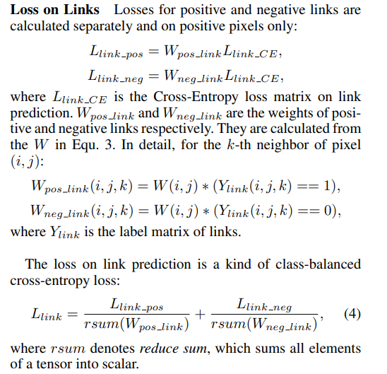
SPCNet(18/11)¶
网络结构
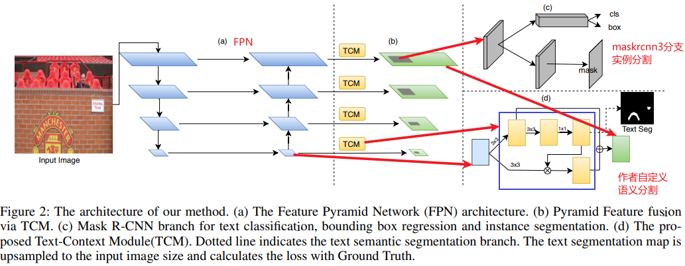
TCM模块
FPN得到的每一个stage的特征用蓝色表示，经过上面一支的三个卷积可以直接预测文字**分割**结果，而1x1 卷积之后的分割图可以作为attention乘回原图，去增强检测特征中的文字区域，并且中间产生的特征可以相加得到**绿色特征**(将检测的特征和分割的特征融合起来，得到更为丰富的特征表达)
RS模块
作用:对于倾斜文字或者弯曲文字maskrcnn检测框得分较低(大部分都是背景)，但在语义分割图上它们具有较高的响应；一些错误样本具有较高的检测得分，但是在语义分割图上的响应较低。作者考虑将实例分割和语义分割的结果相融合，通过重新计算合理的分数，从而降低错误样本检测。
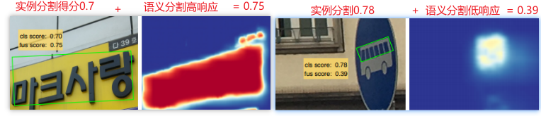
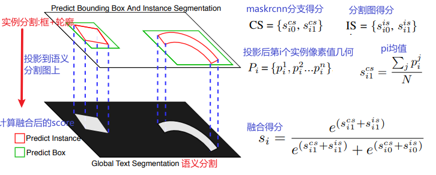
标签生成
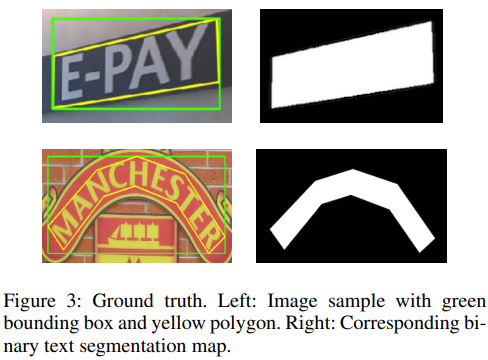
PSENet(19/03)¶
传统文字检测对弯曲文字块表现不好，直接使用语义分割很难分离靠的很近的文本。本文提出先增大文字块之间的距离，然后通过渐进扩展算法来构建完整的文字块
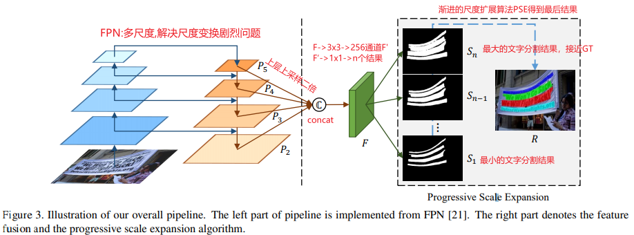
n个二值图产生公式
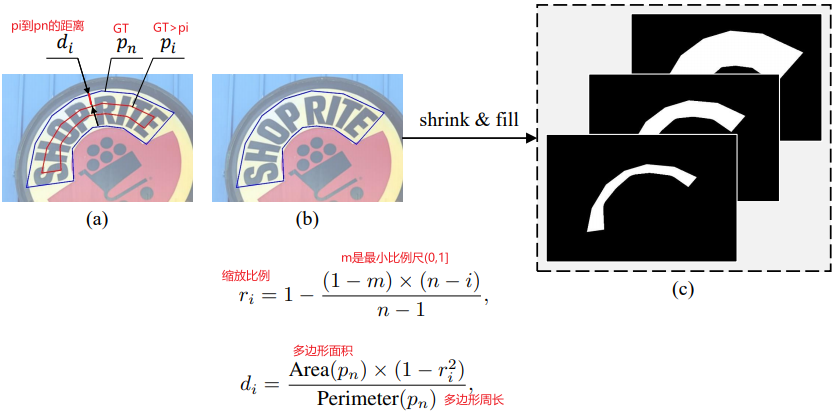
核心算法:PSE(渐进尺度扩张算法:Progressive Scale Expansion)
PSE算法的主要思想就是利用BFS（广度优先搜索）算法，逐渐扩展kernel（就是下图中的白色的部分，预测的文本行区域）的大小，最终扩增到原始文本行大小（如S3）
损失函数
通常文本实例可能只占自然场景很小的一部分，因此如果采用二进制交叉熵损失会造成预测结果更加偏向于非文本区域(即文字和非文字像素十分不平衡)。这里我们采用dice coefficient损失函数：
PAN(19/08)¶
网络结构
FPEM模块
FFM融合模块
像素聚合思路
损失函数

DB(19/11)¶
在基于分割的文本检测网络中，最终的二值化map都是使用固定阈值来获取，并且阈值不同对性能影响较大。本文中，对每一个像素点进行自适应二值化，二值化阈值由网络学习得到，彻底将二值化这一步骤加入到网络里一起训练，这样最终的输出图对于阈值就会非常鲁棒。
网络
标签生成
-
P图:有文字的区域有值，无文字区域黑色，为0. -
T图:只有文字边界线有值，其他地方为0.其实就是将文本框向内+向外收缩和扩招d个像素,然后计算收缩框和扩张框之间差集部分里每个像素点到原始图像边界的归一化距离。
T图非文字边界是灰色的，这是因为统一加了0.3，所有最小值是0.3，这是为了后面有用的.
可微分二值化
结合概率图P_i,j和阈值图T_i,j，就能得到二值图B^_i,j
B图的计算和T图0.3的用处是为了更好的区分(例如,非文字块区域:x=p-T<0这样拉到负半轴更有利于区分)
损失函数
Ls,Lb都是binary cross-entropy (BCE),同时为了解决正负样本不均衡使用hard negative mining,使得正负样本1:3
Lt是预测结果和标签之间的L1距离，其中Rd是在膨胀Gd内像素的索引，y*是阈值map的标签。

推理流程
在推理时可以采用概率图或近似二值图来生成文本框，为了方便作者选择了概率图，具体步骤如下:
- 二值图确定:
- 使用**近似二值图B**，直接使用即可
-
使用**概率图P**：使用固定阈值
0.2将概率图做二值化得到二值化图，由二值化图得到收缩文字区域(作者推荐) -
将收缩文字区域按
Vatti clipping算法(PSENet)的偏移系数D'进行扩张得到最终文本框